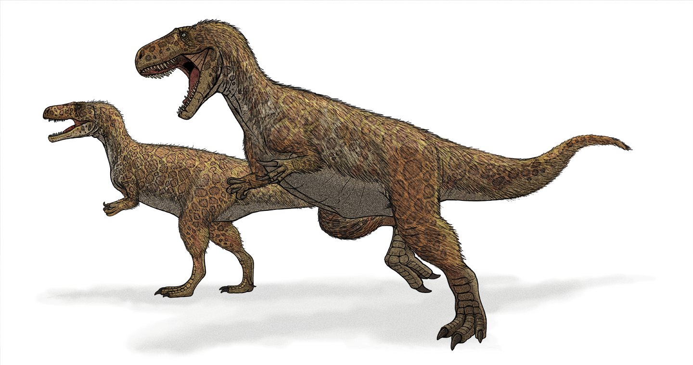

Curiosidades:
Nesta página, você vai explorar uma série de curiosidades sobre essas criaturas incríveis: como viveram, o que comiam, como se protegiam, por que desapareceram e dinossauros ainda vivos. Descubra mais sobre os mistérios da era pré-histórica e as novas descobertas que os paleontólogos fazem a cada ano.
Dinossauros habitaram a Terra por milhões de anos, vivendo em diversos ambientes, desde florestas até desertos, e se adaptando às mudanças climáticas e geográficas.
A extinção dos dinossauros é atribuída a eventos catastróficos, como o impacto de asteroides e atividades vulcânicas, que alteraram drasticamente o clima da Terra.
Eram divididos entre herbívoros, como o Brontossauro, que se alimentavam de plantas, e carnívoros, como o Tiranossauro Rex, que caçavam outras criaturas.
Primeiro Fóssil Encontrado:
No ano de 2024, a paleontologia (a ciência que estuda os seres vivos que viveram num passado remoto da Terra.) vive um marco: 200 anos da primeira descoberta acerca dos dinossauros. O primeiro dinossauro descoberto foi um Megalossauro, encontrado por William Buckland.

O megalossauro (Megalosaurus bucklandi, do latim "lagarto grande" ou "grande réptil") foi um dinossauro carnívoro e bípede que viveu durante o período Jurássico, media de 8 a 9 metros de comprimento e pesava em torno de duas toneladas. Por conta da falta de fosséis completos, os detalhes de sua aparência podem não estar certos, apesar disso, algumas representações foram criadas, com base nos ossos recuperados do grande animal extinto.
Dinossauros do Brasil:
Gigantes Pré-Históricos em Território Nacional
Quando pensamos em dinossauros, é comum imaginar grandes criaturas vagando por terras distantes. No entanto, o Brasil também foi o lar de diversas espécies fascinantes de dinossauros. De carnívoros temíveis a herbívoros pacíficos, muitos desses gigantes viveram em nosso território há milhões de anos. Logo abaixo, veremos algumas dessas criaturas fantásticas que pisaram em território nacional.
Staurikosaurus Pricel
Iniciando a lista com o dinossauro dono do fóssil de dinossauro mais antigo já encontrado, As datações de rochas próximas revelam que esse animal viveu há 233 milhões de anos. O estauricossauro (do grego “lagarto Cruzeiro do Sul”) é um dinossauro herrerassaurídeo que viveu no Brasil, entre as idades Carniana e Noriana do Triássico Superior, de 233 a 221 milhões de anos atrás. É, portanto, um dos dinossauros mais antigos de que se tem notícia e também o primeiro descoberto no País. Com 2,2 m de comprimento, 80 cm de altura e 30 kg, era pequeno em comparação com dinossauros carnívoros mais tardios.
Oxalaia Quilombensis
Um dinossauro um tanto polêmico, Oxalaia Quilombensis é um dos terópodes (subordem de dinossauros bípedes) mais longos conhecido pela ciência, com mais de quinze metros de comprimento. Sendo um parente muito próximo do Espinossauro Africano, Oxalaia foi, provavelmente, o maior predador a vagar pelas terras tupiniquins. Devido ao seu esqueleto incompleto, surgiu uma debate polêmico de que o Oxalaia na verdade nunca existiu e seus restos encontrados pertecessem a um espinossauro juvenil. Seja como for, muitos cientistas ainda acreditam em sua existência e devido a isso, não poderia deixar de ser citado.
Uberabatitan Ribeiroi
Um titan brasileiro, o Uberabatitan foi o maior dinossauro já descoberto no Brasil. Desenterrado em 2004, esse dinossauro era um saurópode (dinossauros herbívoros com pescoços e caudas extremamente longos) que viveu durante o período Cretáceo, há cerca de 70 milhões de anos. Os fósseis foram encontrados em Uberaba, Minas Gerais, uma região rica em descobertas paleontológicas. Esses gigantes podiam atingir impressionantes 26 metros de comprimento, o que os tornava verdadeiros titãs entre os dinossauros herbívoros.
Criaturas Confundidas com Dinossauros:
A História Além dos Gigantes
Quando falamos em criaturas pré-históricas, os dinossauros são os primeiros a vir à mente. No entanto, nem todas as enormes criaturas que vagaram pela Terra nesse período eram, de fato, dinossauros. Ao longo dos anos, várias espécies, como os pterossauros e os plesiossauros, foram erroneamente classificadas como dinossauros por sua aparência imponente ou sua coexistência no mesmo período geológico. Mais abaixo, exploraremos algumas das criaturas que são comumente confundidas com nossos queridos dinossauros.
Pterossauros
Os pterossauros constituem uma ordem extinta da classe Reptilia, que corresponde aos répteis voadores que dominaram os céus durante o período Mesozóico. Embora o nome “pterossauro” tenha a palavra “sauro” (do latim “lagarto”), e tenham coexistido com os dinossauros, esses seres não pertencem ao grupo dinossauros. Ao contrário dos grandes lagartos terrestres, os pterossauros desenvolveram asas membranosas adaptadas para o voo, com algumas espécies apresentando envergaduras impressionantes de até 10 metros.
Plesiossauros
Os Plesiossauros eram répteis marinhos que habitaram os oceanos durante o período Mesozóico, ao lado dos dinossauros. Assim como os pterossauros, os membros da família Plesiosauria são comumente confundidos com dinossauros, seja por sua aparência exótica e assustadora ou pelo período em que viveram. Os plesiossauros eram criaturas completamente adaptada à vida marinha, eles possuíam corpos largos, caudas curtas e nadadeiras poderosas, que lhes permitiam nadar com agilidade pelos mares pré-históricos.
Mosassauros
Assim como os Plesiossauros, os Mosassauros eram répteis marinhos que habitaram os oceanos durante o período Cretáceo, nos últimos anos da era dos dinossauros. No entanto, diferentemente dos plesiossauros, os mosassauros tinham corpos alongados, semelhantes aos dos lagartos modernos, e eram nadadores extremamente poderosos. Com suas mandíbulas enormes e cheias de dentes afiados, eles eram predadores vorazes que dominavam os mares, caçando peixes, tartarugas e até outros grandes répteis marinhos. Os mosassauros são um exemplo fascinante de predadores marinhos que coexistiram com dinossauros, mas que, assim como os plesiossauros, pertencem a um grupo completamente distinto.
Os Dinossauros Ainda Vivos
Não é de hoje que a maioria dos dinossauros são retratados como répteis gigantes, quase como lagartos com vários metros de altura e centenas de dentes afiados. Embora memorável, essa representação está longe de como os cientistas retratam a aparência da maioria dos dinossauros. Muitos deles eram mais parecidos com os dinossauros ainda vivos: as aves.
É isso mesmo que você leu: as aves não são apenas parentes dos dinossauros; elas também são dinossauros. Isso pode parecer chocante e até absurdo para algumas pessoas, mas logo abaixo explicarei melhor.
Archaeopteryx: O Elo Perdido.
Considerada pelos cientistas como um elo perdido entre as aves atuais e os répteis – ou mais especificamente, os dinossauros, o Archaeopteryx (“asa antiga”) viveu há aproximadamente 150 milhões de anos na área que hoje é o sul da Alemanha. Quando os fósseis de Archaeopteryx foram descobertos no século XIX, eles forneceram evidências significativas de que as aves não eram apenas parentes dos dinossauros, mas sim descendentes diretos.
Em uma conversa feita pelo Canaltech com a Beatriz Marinho Hörmanseder, bióloga, paleontóloga e divulgadora científica, ela explicou tudo que precisamos saber sobre essa comparação de dinossauros com aves. Beatriz diz que os dinossauros estão no grupo dos répteis, assim como os pterossauros, crocodilianos, serpentes e tartarugas, e ao longo de milhões de anos eles foram se desenvolvendo. "Eles surgiram, aproximadamente, há 230 milhões de anos, no período Triássico, o primeiro da Era Mesozoica"
O cladograma acima mostra as divisões através de sua árvore evolutiva. Beatriz explica: "Começamos em répteis e, logo na direita, temos as tartarugas. Na esquerda, são divididos em dois grupos, Lepidosauria, que são as serpentes e os lagartos, e Archosauria, os crocodilianos e as aves"
Agora, vamos à divisão dos dinossauros. De acordo com a especialista, os dinossauros se dividem em dois grupos: Ornithischia e Saurischia, nomes que foram dados com base nas características anatômicas de cada grupo. "As aves estão dentro de Saurischia, que são divididos em dois grupos: Saurópodes e Terópodes", conta. Enquanto os Saurópodes são os dinossauros pescoçudos, grandes e herbívoros, os Terópodes são carnívoros, incluindo o famoso Tiranossauro Rex.
Em Terópodes, então, temos nossa resposta: dentro deles estão as aves e os Terópodes não-avianos, que não são aves. A partir disso tudo, a paleontóloga nos revela o que queríamos ouvir: que todas as aves são dinossauros, pois estão inclusas no grupo dos dinossauros. "Alguns dinossauros são aves, mas todas as aves são dinossauros", conta.
A paleontóloga reforça que, hoje, não existe nenhum outro dinossauro na Terra a não ser as aves, pois graças às penas e asas, eles conseguiram voar e sobreviver às consequências do meteoro que levou à extinção dos dinossauros não-avianos.